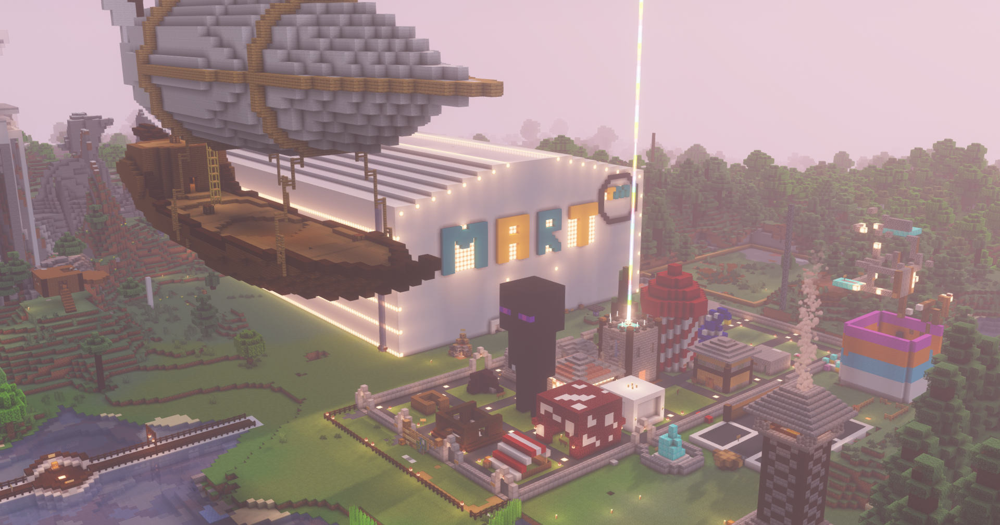
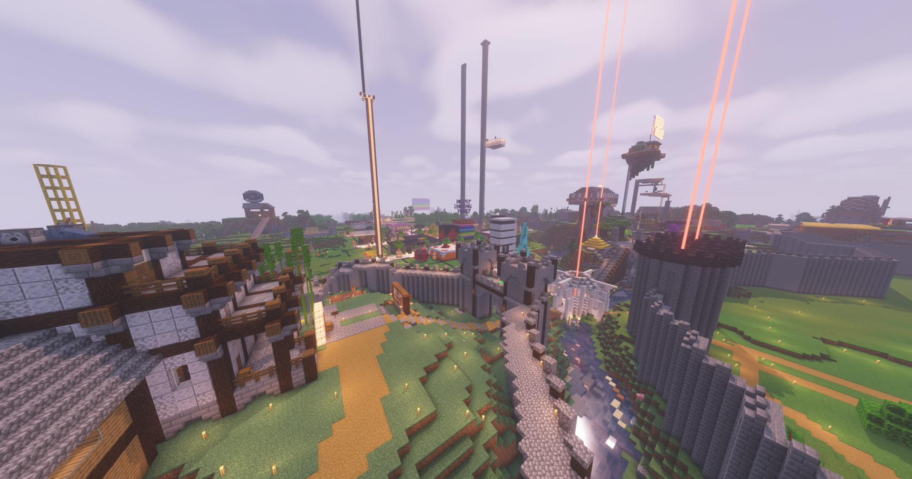
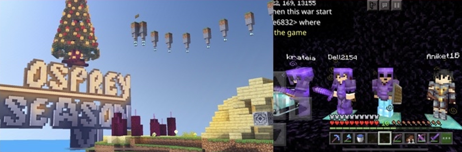
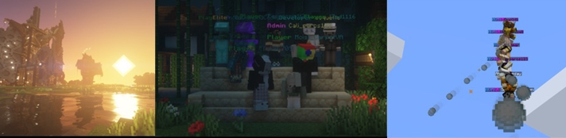
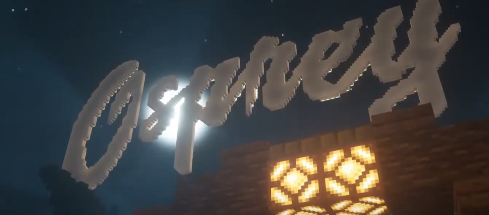

Osprey is a long-running Minecraft community that’s been around in one form or another since early 2020. the server has gone through countless worlds, stories, and eras — all shaped by the people worldwide who played through them.
to date, over 2000 individual players have played Osprey at one point!
today, Osprey runs as a vanilla Java/Bedrock crossplay server, focused on keeping Minecraft’s classic feel while adding small features and new things that make the world feel alive.
the golden age (march 2020 – june 2020)
the creation, and the rise of Osprey
Osprey was created on march 3, 2020 as a small 10-player Minecraft realm that quickly grew into a tight community. season 1 set the foundation of a simple survival world, friendly chaos, and a small but active playerbase.
season 2 expanded things fast. admins like Kevin, Freeman, Bosscore, and Kiro helped shape the world’s early identity. “the mall” was built and flooded (twice), the first organized PvP weekend happened, and the community started becoming many people's escape from "Covid".
season 3 is remembered as Osprey’s peak — themed around ancient Greece, with admins roleplaying as gods (Zeus, Hades, Poseidon, etc.). the realm stayed full 24/7 (a legendary feat back then), people waited to join, and countless iconic players joined. creativity, community, and nonstop happenings defined this era.

season 1 archival photographs
delving into the mainstream (late 2020)
rivalry, drama, and the fall of the old community
as Osprey grew, it became tied into the larger “Realms community.” this led to months of rivalry and chaos known as the Yosho drama arc, a drawn-out feud between Osprey and another popular realm community.
the situation escalated into raids, mass bans, and doxxing — it unified players for a time, but ultimately burned everyone out. internally, admins began arguing, the playerbase split, and morale dropped.
external drama, burnout, and internal tension ended the golden age and pushed the realm into temporary decline with several notable admins quitting or ghosting the server.

the final days of season 3
the hype seasons (early 2021)
explosive growth and chaos
after the Yosho fallout, Osprey rebooted bigger than ever with seasons 5 and 6. these were the “hype” seasons — flashy builds, new factions, massive wars, and up to 1,000 members total (around 60+ active joins daily).
Osprey was the first (and only) realm in history that achieved a legendary 30 player cap solely on Bedrock. this was achieved with an expensive, experimental virtualized Xboxes that would host the world — the Xbox multiplayer had a cap of 30 players, whereas Realms had 11 (10 + owner). this was before the days of crossplay and Osprey was the one of largest Bedrock Realms in history due to this unique pioneering step.
it was the most ambitious Osprey ever got. the server reached new heights in scale and reputation, with faction systems, world events, and player-led storylines. but the pace was unsustainable, and burnout crept back in.

historical photographs - pre war preparations during christmas/new years
the decline (seasons 7–10, ended september 2021)
instability, new servers, and collapse
Osprey eventually moved off Realms, experimenting with crossplay, plugins, and eventually full modded setups like Osprey MMO — featuring dungeons, mobs, and custom systems.
Osprey was one of the first servers to be a crossplay server, paying for Patreon gated access to Geyser and Floodgate, finally uniting the Java and Bedrock playerbases into one giant community.
although the server hit an all time 1600 player peak, that was it for the Osprey of old.
huge creative builds like Wysteria and Drugsville defined this late era, but technical issues, lag, and constant resets frustrated players. by season 9, doxxing, griefing, and admin disputes had taken over.
season 10 (Osprey X, egyptian themed) barely lasted a few weeks before the community went inactive and Kevin stepped away.

pictured left from right - season 8 mmo area - season 9 group photo - season 10 end
legacy
Osprey started as a small 10-player Bedrock realm in 2020, founded by Kevin and went on to become one of the most influential Minecraft servers of its era. it grew into the largest Bedrock realm ever made, (literally the biggest realm in a collection of 40+ other gigantic networks, and the most popular community voted one) — known for its scale, events, and community impact. (putting it very gently)
at its peak, Osprey was one of the first servers to push the limits of what a Bedrock world could be — hosting 30-player Realms, something unheard of at the time, and eventually becoming one of the first to bridge Bedrock and Java players together using Geyser and pioneering the popularity of platform bridging.
many of the features and community structures common in today’s Reddit survival servers — world event roleplay, player-driven lore, and hybrid crossplay setups — can trace roots back to experiments that happened on Osprey.
if you played on a Bedrock SMP during 2020–2021, there’s a good chance you joined Osprey at some point — or at least played on a server influenced by it.
OG Osprey still lives in infamy to those who know and remember what it was.

written with love by hyun (krat)
we use a high-spec VPS located at United Kingdom to host the server.
the specs are as follows:
we use various plugins to improve the player experience. our current plugin list is as follows: